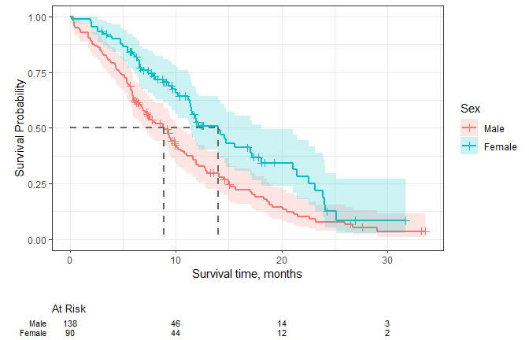
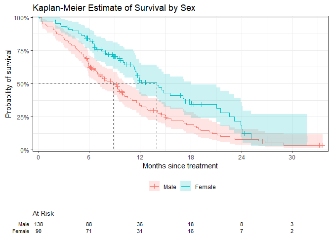
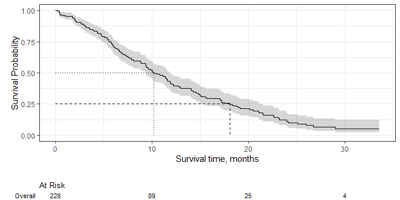
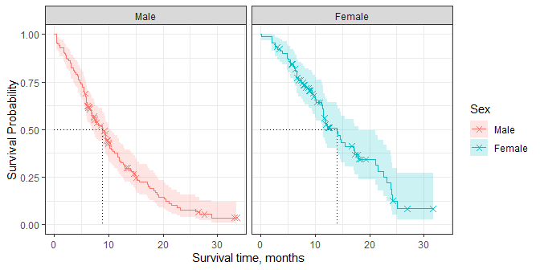
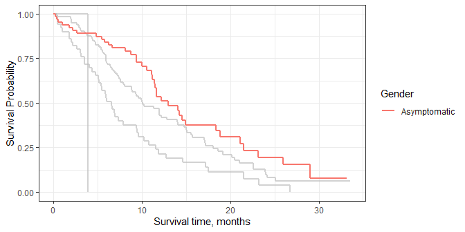
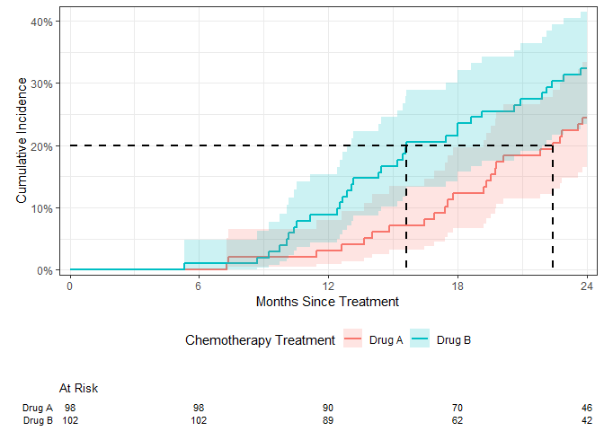

Introduction
The {ggsurvfit} package eases the creation of time-to-event (aka survival) endpoint figures with ggplot2. The concise and modular code creates images that are ready for publication or sharing.
Why ggsurvfit?
Publishable Legends Raw variable names do not appear in the figure legend, e.g.
"sex=Female".Use ggplot2 functions Each {ggsurvfit} add-on function (e.g.
add_confidence_interval(),add_risktable(), etc.) is written as a proper ggplot2 ‘geom’, meaning that the package functions can be woven with ggplot2 functions seamlessly.Limitless Customization You can modify the x-axis scales or any other plot feature and the risk table will still align with the plot.
Installation
You can install the development version of ggsurvfit from GitHub with:
# install.packages("devtools")
devtools::install_github("ddsjoberg/ggsurvfit")Examples
Let’s begin with an example illustrating a common Kaplan-Meier survival curve.
It’s recommended to use the survfit2() function with this package, rather than survival::survfit() to ensure all quantities are able to be calculated from any environment the functions are called.
library(ggsurvfit)
library(ggplot2)
p <-
survfit2(Surv(time, status) ~ sex, data = df_lung) |>
ggsurvfit(size = 1) +
add_censor_mark() +
add_confidence_interval() +
add_risktable() +
add_quantile(color = "gray50", size = 1)
p
Because each of the functions are written as proper ggplot geoms, you can add any ggplot function to modify the figure.
p +
labs(
y = "Probability of survival",
x = "Months since treatment",
title = "Kaplan-Meier Estimate of Survival by Sex",
# remove the fill and color legend labels (Sex appears in title)
fill = NULL, color = NULL
) +
# reduce padding on edges of figure, and format axes
scale_y_continuous(label = scales::percent, expand = c(0.01, 0)) +
scale_x_continuous(breaks = 0:5*6, expand = c(0.02, 0))
The package also supports unstratified models and you can add multiple quantile guidelines.
survfit2(Surv(time, status) ~ 1, data = df_lung) |>
ggsurvfit(size = 1) +
add_quantile(linetype = 3, size = 1) +
add_quantile(y_value = 0.25, linetype = 2, size = 1) +
add_confidence_interval() +
add_risktable()
You can even facet…but you cannot facet with the risktable, however.
survfit2(Surv(time, status) ~ sex, data = df_lung) |>
ggsurvfit(size = 1) +
add_censor_mark(shape = 4) +
add_quantile(linetype = 3, size = 1, color = "gray50") +
add_confidence_interval() +
ggplot2::facet_grid(~strata)
The package works seamlessly with other ggplot extension package, such as {gghighlight}.
survfit2(Surv(time, status) ~ ph.ecog, data = df_lung) |>
ggsurvfit(size = 1) +
ggplot2::labs(color = "ECOG") +
gghighlight::gghighlight(strata == "Asymptomatic", calculate_per_facet = TRUE)
The package also plots cumulative incidence estimates in the presence of competing events.
library(tidycmprsk)
cuminc(Surv(ttdeath, death_cr) ~ trt, trial) %>%
ggcuminc(outcome = "death from cancer", size = 1) +
add_confidence_interval() +
add_quantile(y_value = 0.20, size = 1, color = "gray50") +
add_risktable() +
labs(x = "Months Since Treatment") +
theme(legend.position = "bottom") +
scale_y_continuous(label = scales::percent, expand = c(0.02, 0)) +
scale_x_continuous(breaks = 0:4 * 6, expand = c(0.02, 0))